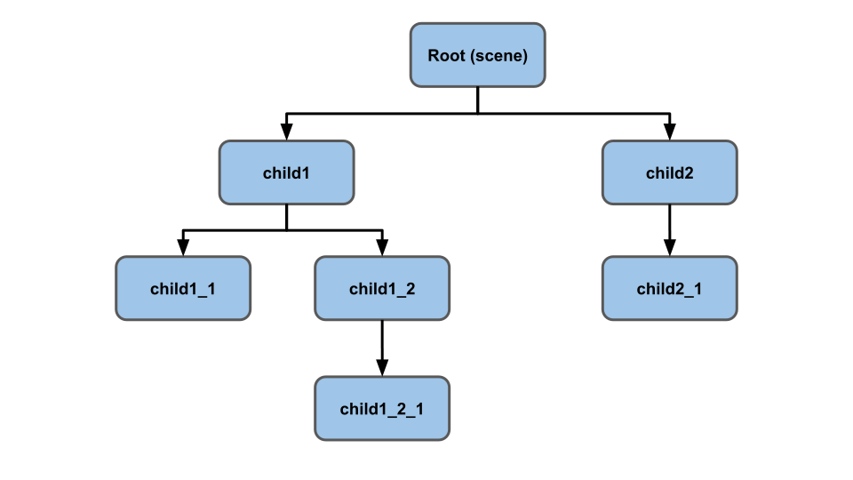
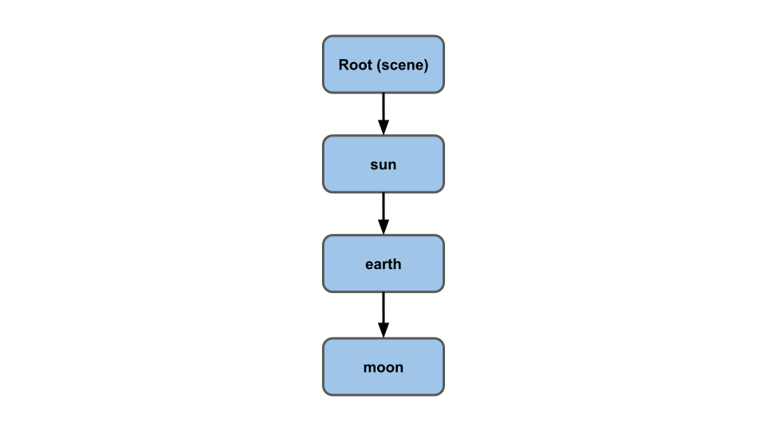
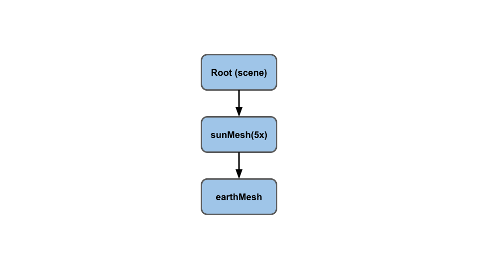
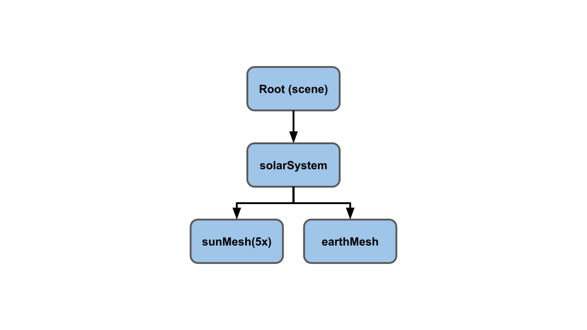
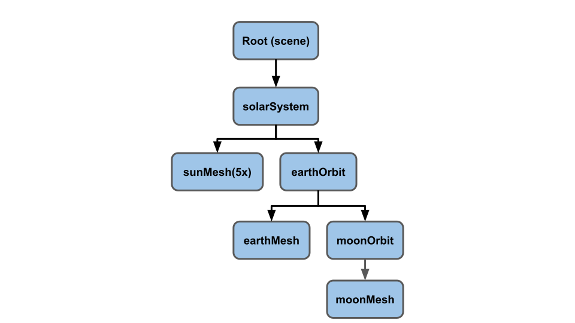
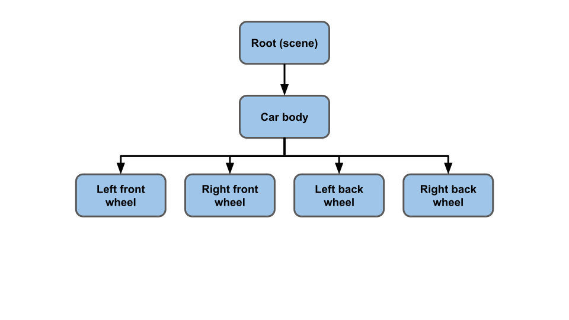
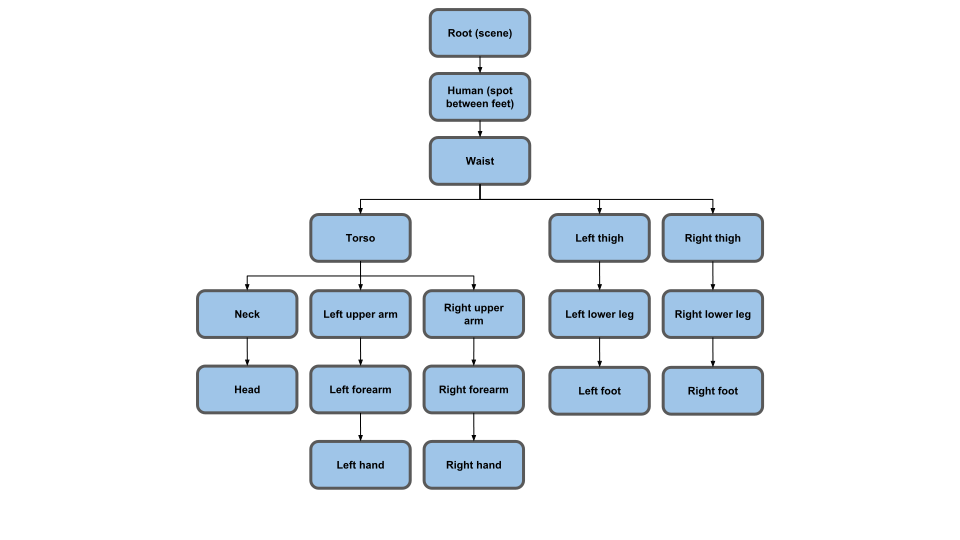
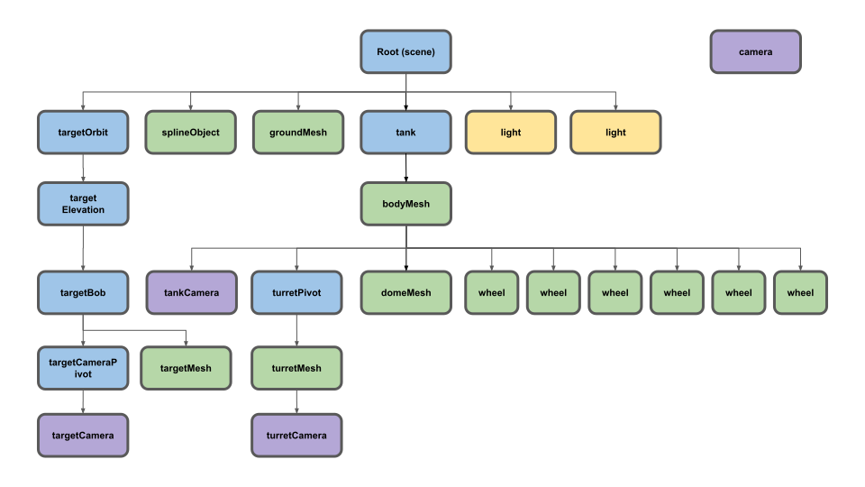

这篇文章是关于 three.js 系列文章的一部分。第一篇文章是 three.js 基础。如果你还没有阅读，你可能想从那里开始。
Three.js 的核心可以说是它的场景图。3D 引擎中的场景图是一个节点层次结构的图，每个节点代表一个局部空间。

这有点抽象，所以让我们尝试给出一些例子。
一个例子可能是太阳系、太阳、地球、月球。

地球绕太阳公转。月球绕地球公转。月球围绕地球做圆周运动。从月球的角度来看，它是在地球的“局部空间”中旋转。尽管它相对于太阳的运动在月球看来是一条疯狂的类似螺旋画的曲线，但从月球的角度，它只需关注围绕地球的局部空间旋转。
换一种方式思考，你生活在地球上，并不需要考虑地球自转或围绕太阳旋转。你只是像地球根本没有移动或旋转一样行走、开车、游泳或跑步。你在地球的“局部空间”中行走、开车、游泳、跑步和生活，尽管相对于太阳，你以大约每小时1000英里的速度绕地球自转，以大约每小时67000英里的速度绕太阳旋转。你在太阳系中的位置类似于上面提到的月球，但你无需为此担心。你只需要关心自己在地球“局部空间”中的位置。
让我们一步一步来。想象一下我们想要制作一个太阳、地球和月亮的图示。我们将从太阳开始，只需制作一个球体并将其放在原点。注意：我们使用太阳、地球、月亮只是为了演示如何使用场景图。当然，真实的太阳、地球和月亮遵循物理规律，但出于我们的目的，我们将通过场景图来模拟它。
// an array of objects whose rotation to update
const objects = [];
// use just one sphere for everything
const radius = 1;
const widthSegments = 6;
const heightSegments = 6;
const sphereGeometry = new THREE.SphereGeometry(
radius, widthSegments, heightSegments);
const sunMaterial = new THREE.MeshPhongMaterial({emissive: 0xFFFF00});
const sunMesh = new THREE.Mesh(sphereGeometry, sunMaterial);
sunMesh.scale.set(5, 5, 5); // make the sun large
scene.add(sunMesh);
objects.push(sunMesh);
我们使用的是一个非常低多边形的球体，赤道方向只有6个细分。这是为了让旋转更容易看清。
我们将重复使用相同的球体，所以我们将太阳网格的缩放设为5倍。
我们还将 phong 材质的 emissive 属性设置为黄色。phong 材质的自发光属性基本上是即使没有光照射到表面也会显示的颜色。光会被添加到该颜色上。
我们还在场景中心放置一个点光源。关于点光源的更多细节我们稍后会讲，但目前简单的说，点光源表示从一个点发出的光。
{
const color = 0xFFFFFF;
const intensity = 500;
const light = new THREE.PointLight(color, intensity);
scene.add(light);
}
为了便于观察，我们将把相机直接放在原点上方向下看。最简单的方法是使用 lookAt 函数。lookAt 函数会将相机从它的位置定向为“看向”我们传递给 lookAt 的位置。但是在此之前，我们需要告诉相机哪个方向是顶部，或者更准确地说，哪个方向对相机来说是“上”。对大多数情况来说，将正 Y 作为上方已经足够，但由于我们是直接向下看的，所以需要告诉相机正 Z 方向为上。
const camera = new THREE.PerspectiveCamera(fov, aspect, near, far); camera.position.set(0, 50, 0); camera.up.set(0, 0, 1); camera.lookAt(0, 0, 0);
在渲染循环中，借鉴之前的示例，我们使用这段代码旋转 objects 数组中的所有对象。
objects.forEach((obj) => {
obj.rotation.y = time;
});
自从我们将 sunMesh 添加到 objects 数组中，它将会旋转。
现在让我们添加地球。
const earthMaterial = new THREE.MeshPhongMaterial({color: 0x2233FF, emissive: 0x112244});
const earthMesh = new THREE.Mesh(sphereGeometry, earthMaterial);
earthMesh.position.x = 10;
scene.add(earthMesh);
objects.push(earthMesh);
我们制作一种蓝色的材质，但给它添加少量的 自发光 蓝色，这样它就能在黑色背景下显示出来。
我们使用相同的 sphereGeometry 与我们新的蓝色 earthMaterial 来制作一个 earthMesh。我们将它放置在太阳左侧10个单位处，并将其添加到场景中。由于我们将它添加到 objects 数组中，它也会旋转。
你可以看到太阳和地球都在旋转，但地球并没有绕着太阳转。让我们把地球设为太阳的子物体。
-scene.add(earthMesh); +sunMesh.add(earthMesh);
然后...
发生了什么？为什么地球和太阳一样大，为什么它离得这么远？ 我实际上不得不将摄像机从上方50个单位移动到上方150个单位才能看到地球。
我们把earthMesh设置为sunMesh的子对象。sunMesh的
缩放设置为5倍，使用sunMesh.scale.set(5, 5, 5)。这意味着
sunMesh的本地空间大了5倍。放入该空间的任何物体
都会被乘以5。这意味着地球现在大了5倍，并且
它与太阳之间的距离(earthMesh.position.x = 10)也会
增加5倍。
我们当前的场景图看起来是这样的

为了解决这个问题，我们添加一个空的场景图节点。我们将太阳和地球都设置为该节点的子节点。
+const solarSystem = new THREE.Object3D();
+scene.add(solarSystem);
+objects.push(solarSystem);
const sunMaterial = new THREE.MeshPhongMaterial({emissive: 0xFFFF00});
const sunMesh = new THREE.Mesh(sphereGeometry, sunMaterial);
sunMesh.scale.set(5, 5, 5);
-scene.add(sunMesh);
+solarSystem.add(sunMesh);
objects.push(sunMesh);
const earthMaterial = new THREE.MeshPhongMaterial({color: 0x2233FF, emissive: 0x112244});
const earthMesh = new THREE.Mesh(sphereGeometry, earthMaterial);
earthMesh.position.x = 10;
-sunMesh.add(earthMesh);
+solarSystem.add(earthMesh);
objects.push(earthMesh);
这里我们创建了一个 Object3D。像一个 Mesh 它也是场景图中的一个节点，但不同于一个 Mesh 它没有材质或几何体。它只是表示一个局部空间。
我们新的场景图如下：

sunMesh 和 earthMesh 都是 solarSystem 的子节点。三个节点都在旋转，现在因为 earthMesh 不是 sunMesh 的子节点，它不再被放大 5 倍。
好了得多了。地球比太阳小，它绕太阳旋转，同时自身也在旋转。
继续同样的模式，让我们添加一颗月亮。
+const earthOrbit = new THREE.Object3D();
+earthOrbit.position.x = 10;
+solarSystem.add(earthOrbit);
+objects.push(earthOrbit);
const earthMaterial = new THREE.MeshPhongMaterial({color: 0x2233FF, emissive: 0x112244});
const earthMesh = new THREE.Mesh(sphereGeometry, earthMaterial);
-earthMesh.position.x = 10; // note that this offset is already set in its parent's THREE.Object3D object "earthOrbit"
-solarSystem.add(earthMesh);
+earthOrbit.add(earthMesh);
objects.push(earthMesh);
+const moonOrbit = new THREE.Object3D();
+moonOrbit.position.x = 2;
+earthOrbit.add(moonOrbit);
+const moonMaterial = new THREE.MeshPhongMaterial({color: 0x888888, emissive: 0x222222});
+const moonMesh = new THREE.Mesh(sphereGeometry, moonMaterial);
+moonMesh.scale.set(.5, .5, .5);
+moonOrbit.add(moonMesh);
+objects.push(moonMesh);
我们又添加了更多不可见的场景图节点。第一个是一个Object3D，名为earthOrbit，并向其中添加了新建的earthMesh和moonOrbit。然后我们将moonMesh添加到moonOrbit。新的场景图如下。

这是那个
你可以看到月亮遵循文章顶部所示的回转花纹模式，但我们不需要手动计算它。我们只是设置了我们的场景图让它为我们完成。
绘制一些东西来可视化场景图中的节点通常是有用的。Three.js 有一些有用的呃，帮助器来呃，……帮助完成这个。
其中一个叫做 AxesHelper。它绘制代表本地X、Y 和 Z 轴的三条线。让我们给我们创建的每个节点都添加一个。
// add an AxesHelper to each node
objects.forEach((node) => {
const axes = new THREE.AxesHelper();
axes.material.depthTest = false;
axes.renderOrder = 1;
node.add(axes);
});
在我们的案例中，我们希望坐标轴即使在球体内部也能显示。
为此，我们将它们材质的 depthTest 设置为 false，这意味着它们不会检查自己是否在其他物体后面绘制。我们还将它们的 renderOrder 设置为 1（默认是 0），这样它们会在所有球体之后绘制。否则球体可能会在它们上方绘制并遮住它们。
我们可以看到 x (红色) 和 z (蓝色) 轴。由于我们是正向俯视，并且每个物体只绕其 y 轴旋转，所以我们不太能看到 y (绿色) 轴。
由于有两对重叠的轴，可能很难看到其中一些。sunMesh 和 solarSystem 位于相同位置。类似地，earthMesh 和 earthOrbit 也位于相同位置。让我们添加一些简单的控件，以便我们可以为每个节点开启或关闭它们。
同时，我们还可以添加另一个辅助工具，称为 GridHelper。它在 X,Z 平面上创建一个二维网格。默认情况下，网格为 10x10 单位。
我们还将使用 lil-gui，这是一个在 three.js 项目中非常流行的 UI 库。lil-gui 会获取一个对象及该对象上的属性名，并根据属性的类型自动生成用于操作该属性的 UI。
我们希望为每个节点创建一个 GridHelper 和一个 AxesHelper。我们需要为每个节点添加标签，因此我们将取消旧的循环，改为调用某个函数为每个节点添加辅助对象
-// add an AxesHelper to each node
-objects.forEach((node) => {
- const axes = new THREE.AxesHelper();
- axes.material.depthTest = false;
- axes.renderOrder = 1;
- node.add(axes);
-});
+function makeAxisGrid(node, label, units) {
+ const helper = new AxisGridHelper(node, units);
+ gui.add(helper, 'visible').name(label);
+}
+
+makeAxisGrid(solarSystem, 'solarSystem', 25);
+makeAxisGrid(sunMesh, 'sunMesh');
+makeAxisGrid(earthOrbit, 'earthOrbit');
+makeAxisGrid(earthMesh, 'earthMesh');
+makeAxisGrid(moonOrbit, 'moonOrbit');
+makeAxisGrid(moonMesh, 'moonMesh');
makeAxisGrid 创建了一个 AxisGridHelper，这是我们将要创建的一个类，以让 lil-gui 高兴。正如上面所说，lil-gui 会自动生成一个可操作某个对象命名属性的 UI。它会根据属性的类型创建不同的 UI。我们希望它创建一个复选框，所以我们需要指定一个 bool 属性。但是，我们希望轴和网格都基于一个属性显示/隐藏，因此我们会创建一个类，为该属性提供 getter 和 setter 方法。这样我们可以让 lil-gui 认为它正在操作单个属性，但在内部我们可以为节点同时设置 AxesHelper 和 GridHelper 的可见属性。
// Turns both axes and grid visible on/off
// lil-gui requires a property that returns a bool
// to decide to make a checkbox so we make a setter
// and getter for `visible` which we can tell lil-gui
// to look at.
class AxisGridHelper {
constructor(node, units = 10) {
const axes = new THREE.AxesHelper();
axes.material.depthTest = false;
axes.renderOrder = 2; // after the grid
node.add(axes);
const grid = new THREE.GridHelper(units, units);
grid.material.depthTest = false;
grid.renderOrder = 1;
node.add(grid);
this.grid = grid;
this.axes = axes;
this.visible = false;
}
get visible() {
return this._visible;
}
set visible(v) {
this._visible = v;
this.grid.visible = v;
this.axes.visible = v;
}
}
。需要注意的一点是，我们将 renderOrder 的 AxesHelper 设置为 2，并将 GridHelper 设置为 1，以便在网格之后绘制坐标轴。否则，网格可能会覆盖坐标轴。
开启 solarSystem，你将看到地球恰好位于距离中心 10 个单位的地方，就像我们上面设置的那样。你可以看到地球位于 solarSystem 的 局部空间 中。同样，如果你开启 earthOrbit，你将看到月球恰好在 earthOrbit 的 局部空间 中距中心 2 个单位的位置。
场景图的更多示例。在一个简单的游戏世界中，一辆汽车的场景图可能是这样的

如果你移动汽车的车身，所有车轮都会跟着移动。如果你希望车身可以独立于车轮弹跳，你可以将车身和车轮父级到一个表示汽车车架的“框架”节点上。
另一个示例是在游戏世界中的一个人类。

你可以看到，人类的场景图会非常复杂。实际上，上面的场景图是简化的。例如，你可能会将其扩展到覆盖每个手指（至少额外28个节点）和每个脚趾（再额外28个节点），加上面部和下颚、眼睛的节点，甚至可能更多。
让我们制作一个半复杂的场景图。我们将制作一辆坦克。坦克将有6个轮子和一个炮塔。坦克将沿着一条路径移动。会有一个球体在移动，坦克将瞄准这个球体。
这是场景图。网格是绿色的，Object3D是蓝色的，灯光是金色的，相机是紫色的。有一个相机尚未添加到场景图中。

查看代码以了解所有这些节点的设置。
对于目标，也就是坦克瞄准的东西，有一个 targetOrbit (Object3D)，它只像上面的 earthOrbit 一样旋转。一个 targetElevation (Object3D)，它是 targetOrbit 的子对象，提供了相对于 targetOrbit 的偏移和基础仰角。其子对象是另一个 Object3D，称为 targetBob，它相对于 targetElevation 只是上下摆动。最后，有一个 targetMesh，它只是一个立方体，我们可以旋转它并改变它的颜色。
// move target targetOrbit.rotation.y = time * .27; targetBob.position.y = Math.sin(time * 2) * 4; targetMesh.rotation.x = time * 7; targetMesh.rotation.y = time * 13; targetMaterial.emissive.setHSL(time * 0.3 % 1, 1, .25); targetMaterial.color.setHSL(time * 0.3 % 1, 1, .25);
对于坦克，有一个 Object3D 叫做 tank，用于移动其下方的所有对象。代码使用了一个 SplineCurve，可以获取曲线上的位置。0.0 是曲线的起点，1.0 是曲线的终点。它获取坦克放置的位置，然后获取曲线上稍远一点的位置，并使用 Object3D.lookAt 让坦克朝向该方向。
const tankPosition = new THREE.Vector2(); const tankTarget = new THREE.Vector2(); ... // move tank const tankTime = time * .05; curve.getPointAt(tankTime % 1, tankPosition); curve.getPointAt((tankTime + 0.01) % 1, tankTarget); tank.position.set(tankPosition.x, 0, tankPosition.y); tank.lookAt(tankTarget.x, 0, tankTarget.y);
坦克顶部的炮塔通过作为坦克的子对象自动移动。为了将它指向目标，我们只需获取目标的世界位置，然后再次使用 Object3D.lookAt
const targetPosition = new THREE.Vector3(); ... // face turret at target targetMesh.getWorldPosition(targetPosition); turretPivot.lookAt(targetPosition);
。有一个 turretCamera 是 turretMesh 的子对象，所以它会随炮塔上下移动和旋转。我们让它瞄准目标。
// make the turretCamera look at target turretCamera.lookAt(targetPosition);
还有一个 targetCameraPivot，它是 targetBob 的子对象，因此会随目标漂浮。我们将它瞄准油箱。其目的是允许 targetCamera 从目标本身产生偏移。如果我们改为将相机作为 targetBob 的子对象，并仅瞄准相机本身，它将位于目标内部。
// make the targetCameraPivot look at the tank tank.getWorldPosition(targetPosition); targetCameraPivot.lookAt(targetPosition);
最后我们旋转所有车轮
wheelMeshes.forEach((obj) => {
obj.rotation.x = time * 3;
});
对于相机，我们在初始化时设置了一个包含所有 4 个相机及其描述的数组。
const cameras = [
{ cam: camera, desc: 'detached camera', },
{ cam: turretCamera, desc: 'on turret looking at target', },
{ cam: targetCamera, desc: 'near target looking at tank', },
{ cam: tankCamera, desc: 'above back of tank', },
];
const infoElem = document.querySelector('#info');
并在渲染时循环切换我们的相机。
const camera = cameras[time * .25 % cameras.length | 0]; infoElem.textContent = camera.desc;
我希望这能让你大致了解场景图是如何工作的，以及你如何使用它们。 创建 Object3D 节点并将东西附加到它们上是高效使用像 three.js 这样的 3D 引擎的重要步骤。 通常，你可能会觉得需要一些复杂的数学来使某个物体以你想要的方式移动和旋转。 例如，如果没有场景图，计算月球的运动或者确定车轮相对于车身的位置将非常复杂，但使用场景图后就会容易得多。